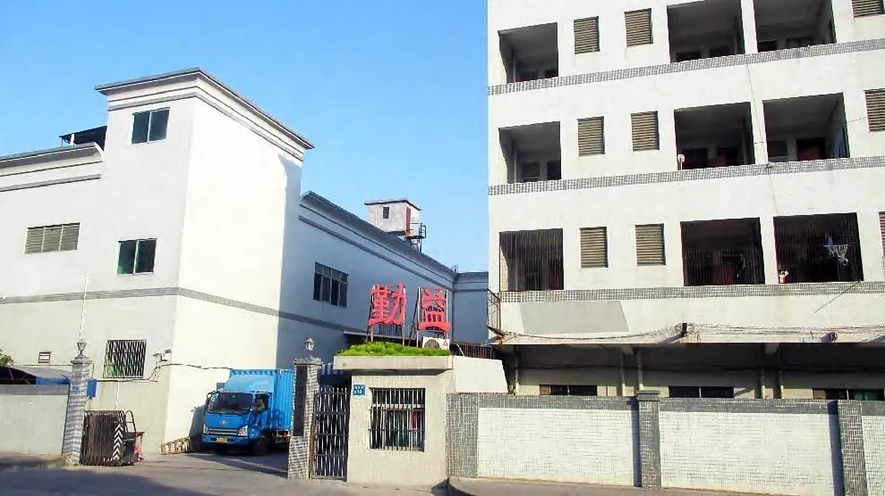

Qinyi Printing
印刷、加工、組立、包装サービスの製造事業。
Dongguan Qinyi Printing Co., Ltd.
Qinyi Printing develops and manufactures custom puzzles, paper games, cards, and printed packaging in Dongguan, China. The approximately 5,000 m² operation has more than 80 team members.

会社の概要
プレプリントと印刷から型抜き、仕上げ、手作業工程、梱包までの連携生産段階が、アートワークを先導し、複数の部品で構成される多機能製品の一つのプロジェクト要件に応じて提供されます。
工場の範囲を確認アイデンティティとブランド
Dongguan Qinyi Printing Co., Ltd.は、英語の会社名としてQinyi Printingを使用しています。Coinshin / 可燊礼品は、2020年から展開しているクリエイティブな紙製ギフトのブランドです。
印刷、加工、組立、包装サービスの製造事業。
2020年よりパズル、ゲーム、クリエイティブな紙製品のギフト製品アイデンティティ。
中国广东省东莞市沙田镇上渊村第10号101国道

私たちが作る
製品範囲にはジグソーパズル、3Dペーパーパズル、ボードゲーム、カードゲーム、教育用紙製品、カラーボックス、ギフトボックス、紙袋、タグ、説明書が含まれます。
製品ラインナップを探索作業モデル
每个项目始于其受众、预期用途、数量、目标市场和时间。
提供されたアートワーク、参考資料、製品目標を製造可能な形式に変換します。
印前、印刷、工具、型抜きと表面加工の総合的な協力
組み立てられた商品の部品、手順書、包装を合意されたパッケージ形式に取り込む
会社について
Qinyi Printingは中国広東省東莞市茶山鎮上元村建民一路10号に所在しています。製品詳細を以下に送付してください hello@qinyiprinting.com.